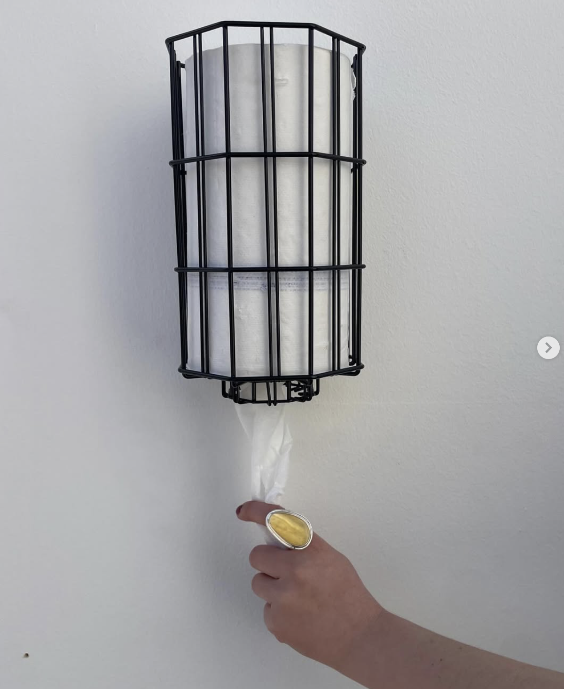
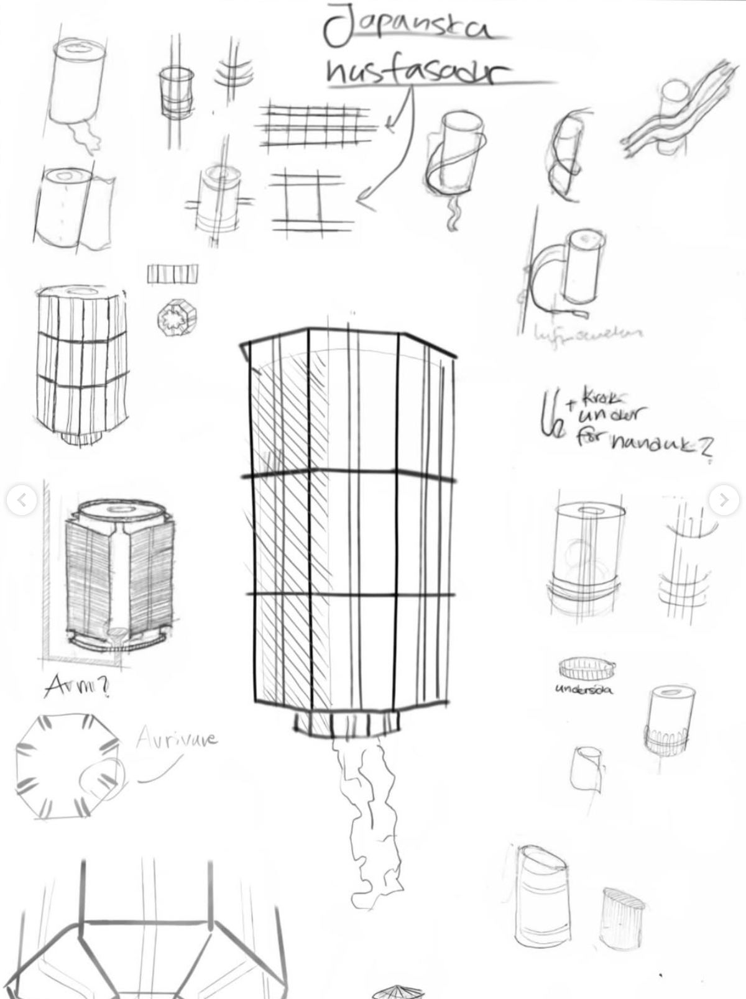

Shiro
En pappershållare som kombinerar funktion och form — stilren, minimalistisk design som smälter in i alla miljöer.
Shiro är en pappershållare som kombinerar funktion och form — en stilren, minimalistisk design som enklare smälter in i alla miljöer utan att kompromissa användbarheten.
Material: 3 och 4 mm ståltråd